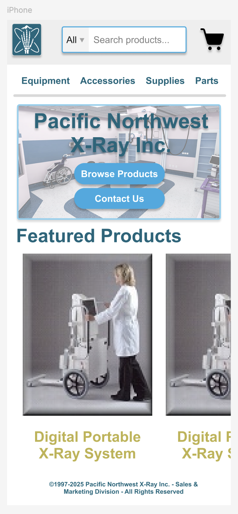
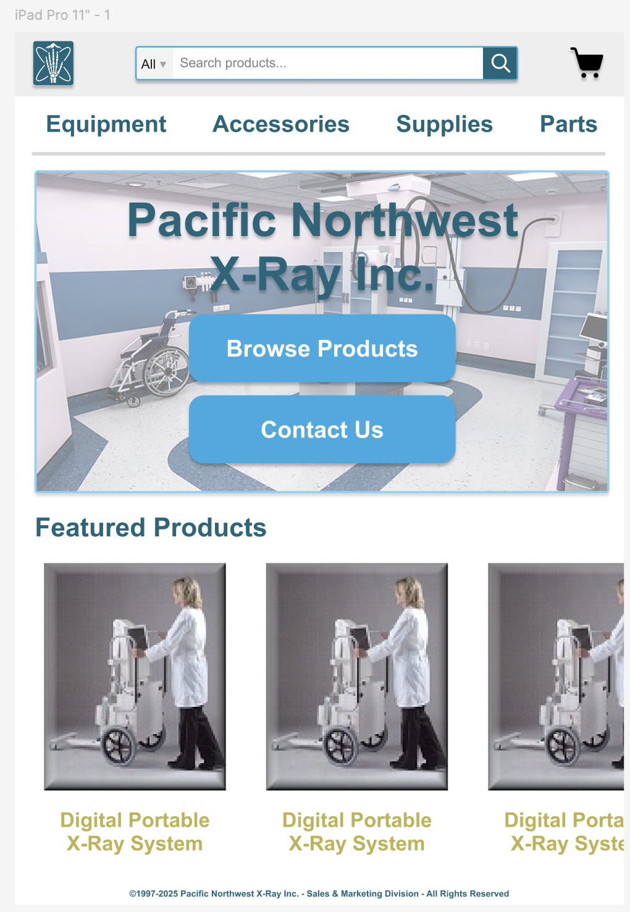
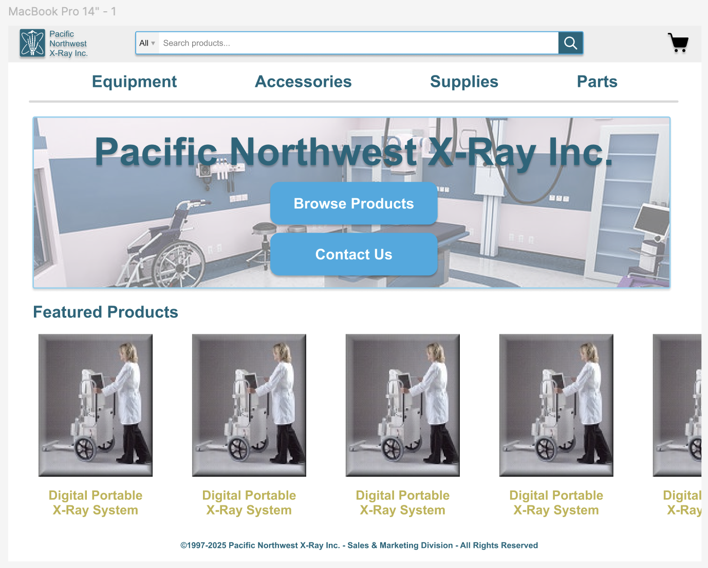

Responsive Redesign: Pacific Northwest X-Ray
Original: pnwx.com
Redesign: My Version
A thoughtful redesign of an outdated X-ray supplier interface into a responsive, accessible site built from scratch.
I chose this site for its critical function—selling expensive medical equipment—but surprisingly clunky interface. As a design student, I saw clear potential to improve both user flow and credibility for a specialized audience.
Identifying Usability Problems
- Efficiency: Navigation is cluttered and duplicated in both header and side menu.
- Learnability: Users aren’t sure where to go to view products vs. request a quote.
- Memorability: The layout is non-standard and requires re-learning where key features are.
- Visual hierarchy: There’s little spacing or alignment consistency.
- Accessibility: WAVE reports 30+ contrast errors, missing alt text, and layout confusion for screen readers.
Visual Redesign Style Guide

Custom logo, responsive buttons, a fresh blue-and-gold palette, and accessible components unify the new design.
Responsive Mockups
Mobile
Collapsed nav, stacked layout, and clear CTAs designed for small screens.
Tablet
Elements rearrange in columns; navigation expands while keeping touch targets large.
Desktop
Full layout with side-by-side product previews, large hero image, and persistent navigation bar.
Responsive Build
The final site is built in HTML/CSS using a mix of flexbox and media queries. Accessibility was validated via WebAIM, and all content scales smoothly across resolutions. I avoided JS frameworks to keep things lean and compliant.
Conclusion
- Good design makes complex, technical tools approachable.
- Responsiveness is more than resizing—it’s about rethinking layout logic.
- Accessibility tools like WAVE are a must in any modern redesign.
Ultimately, this redesign makes a specialized B2B experience smoother, clearer, and more trustworthy for real users.